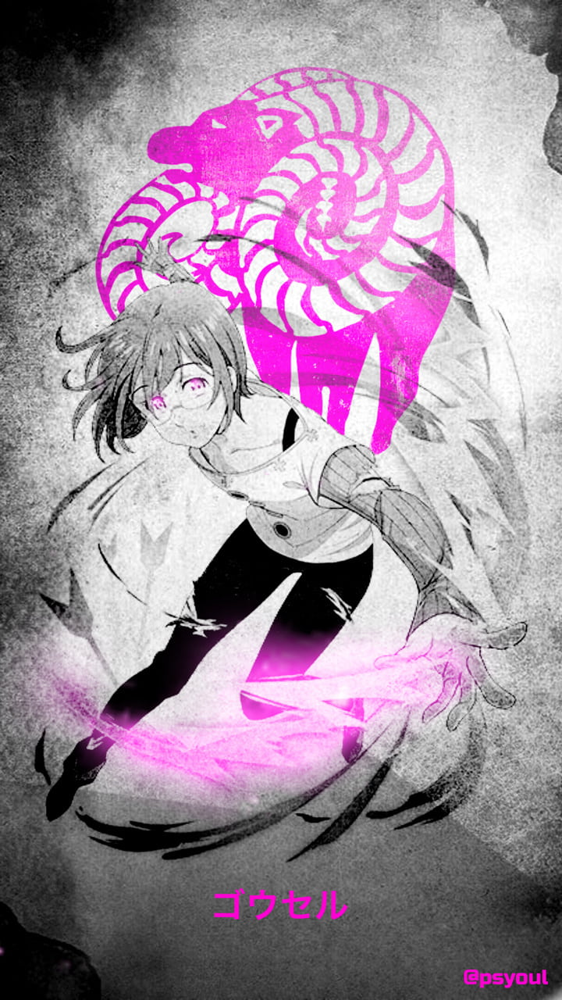

Gowther
Gowther, known as the Goat's Sin of Lust, is a fascinating and unique member of the Seven Deadly Sins. Gowther is actually a doll created by a great wizard, initially meant to be a replacement for the wizard's deceased lover. He has an emotionless demeanor and often struggles to understand human feelings. Gowther's special power is Invasion, which allows him to manipulate memories and emotions. His Sacred Treasure is the Twin Bow, Herritt. Throughout the series, Gowther's journey involves discovering his own identity and understanding the complexities of emotions and relationships.